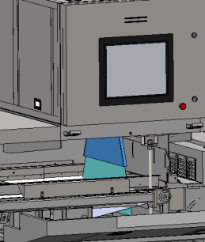

Case 1: how to solve the problem of black and white on the image when the detection is turned on? The following picture:
Solution: check whether the fixing screw of the slit lead block under the lower radiation source is firm. When the equipment is tested, due to the rotation of the belt, the equipment will vibrate, resulting in the shaking of the slit lead block without firm fixation, and the image will be bright and dark because the ray can't irradiate the sensor below.
Case 2: how to solve the original waveform abnormality when the emitter is turned on? The following picture:

Solution: (1) first check whether there is any foreign matter stuck in the belt and the sensor connector under the belt, as shown in the following figure:

(2) if it is invalid after cleaning, pull the system bottom plate out of the slot (as shown in the figure below) to observe whether the length of the original signal waveform is shortened by interference. If the interference waveform is shortened after gradually pulling out, the problem belongs to the mechanical part of the emitter, otherwise, the sensor on the system bottom plate is faulty.

(3) open the front door, remove the part of the external beam cylinder marked in blue as shown in the figure, and then restart the machine to check whether the signal is normal; if the image is normal after removing the part, it may be caused by the deformation of the external beam cylinder or the deviation of the installation position; if the image problem still exists, carry out the fourth troubleshooting below.

(4) open the door of the upper electrical box, remove the baffle of the front side source base, check whether the central inner scribe line of the parts of the light limiting block bracket marked in blue is aligned with the central line marked at the bottom of the box as shown in the figure; if the upper and lower central lines are not aligned, adjust the position alignment of the parts of the light limiting block bracket marked in blue, and then restart the machine to check the image signal; if the upper and lower central lines are aligned, please Fine adjust the position of the parts of the light limiting block bracket marked with blue on the left and right, and check whether the image signal changes and improves;

If none of the above methods can be solved, you can contact Ma Jinxin, mechanical engineer, via wechat.